Overview
Introduction
In order to create reports with SAS procedures, your data must be in the form of a SAS data set. If your data is not stored in the form of a SAS data set, then you need to create a SAS data set by entering data, by reading raw data, or by accessing external files (files that were created by other software).
This shows you how to design and write a DATA step program to create a SAS data set from raw data that is stored in an external file. It also shows you how to read data from a SAS data set and write observations out to a raw data file.
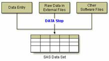Objectives
In this chapter, you learn to
- reference a SAS library.
- reference a raw data file.
- name a SAS data set to be created.
- specify a raw data file to be read.
- read standard character and numeric values in fixed fields.
- create new variables and assign values.
- select observations based on conditions.
- read instream data.
- submit and verify a DATA step program.
- read a SAS data set and write the observations out to a raw data file.
Raw Data Files
A raw data file is an external text file whose records contain data values that are organized in fields. Raw data files are non-proprietary and can be read by a variety of software programs. The sample raw data files in this book are shown with a ruler to help you identify where individual fields begin and end. The ruler is not part of the raw data file.
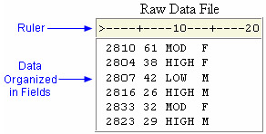The table below describes the record layout for a raw data file that contains readings from exercise stress tests that have been performed on patients at a health clinic. Exercise physiologists in the clinic use the test results to prescribe various exercise therapies. The file contains fixed fields; that is, values for each variable are in the same location in all records.
| Field Name | Starting Column | Ending Column | Description |
|---|---|---|---|
| ID | 1 | 4 | patient ID number |
| Name | 6 | 25 | patient name |
| RestHR | 27 | 29 | resting heart rate |
| MaxHR | 31 | 33 | maximum heart rate during test |
| RecHR | 35 | 37 | recovery heart rate after test |
| TimeMin | 39 | 40 | time, complete minutes |
| TimeSec | 42 | 43 | time, seconds |
| Tolerance | 45 | 45 | comparison of stress test tolerance between this test and the last test (I=increased, D=decreased, S=same, N=no previous test) |
Steps to Create a SAS Data Set
Let's take a look at the steps for creating a SAS data set from a raw data file. In the first part of this chapter, you will learn the steps to create a SAS data set from a raw data file that contains fixed fields. The examples shown use a raw data file that contains data from exercise stress tests, which was introduced on the previous page.
Before reading the raw data from the file, you must first reference the SAS library in which you will store the data set. Then you can write a DATA step program to read the raw data file and create a SAS data set.
To read the raw data file, the DATA step must provide the following instructions to SAS:
- the location or name of the external text file.
- a name for the new SAS data set.
- a reference that identifies the external file.
- a description of the data values to be read.
After using the DATA step to read the raw data, you can use a PROC PRINT step to produce a list report that displays the data values that are in the new data set.
The table below outlines the basic statements that you'll use to construct your program. Throughout this chapter, you'll see similar tables that show sample SAS statements for reading raw data in fixed fields.
| To Do This | Use This SAS Statement |
|---|---|
| Reference a SAS data library | LIBNAME statement |
| Reference an external file | FILENAME statement |
| Name a SAS data set | DATA statement |
| Identify an external file | INFILE statement |
| Describe data | INPUT statement |
| Execute the DATA step | RUN statement |
| List the data | PROC PRINT statement |
| Execute the final program step | RUN statement |
You can also use additional SAS statements to perform tasks that customize your data for your needs. For example, you might want to create new variables from the values of existing variables.
Referencing a SAS Library
Using a LIBNAME Statement
As you begin to write the program, remember that you use a LIBNAME statement to reference the permanent SAS library in which the data set will be stored.
| To Do This | Use This SAS Statement | Example |
|---|---|---|
| Reference a SAS data library | LIBNAME statement | libname libref 'SAS-datalibrary'; |
For example, the LIBNAME statement below assigns the libref Taxes to the SAS library C:\Users\Acct\Qtr1\Report in the Windows environment.
libname taxes 'c:\users\acct\qtr1\report';
You do not need to use a LIBNAME statement in all situations. For example, you do not need to use a LIBNAME statement if you are storing the data set in a temporary SAS data set or if SAS has automatically assigned the libref for the permanent library that you are using.
Referencing a Raw Data File
Using a FILENAME Statement
Before you can read your raw data, you must point to the location of the external file that contains the data. You use the FILENAME statement to point to this location.
| To Do This | Use This SAS Statement | Example |
|---|---|---|
| Reference a SAS data library | LIBNAME statement | libname libref 'SAS-datalibrary'; |
| Reference an external file | FILENAME statement | filename tests 'c:\users\tmill.dat'; |
Just as you assign a libref by using a LIBNAME statement, you assign a fileref by using a FILENAME statement.
Filerefs perform the same function as librefs: they temporarily point to a storage location for data. However, librefs reference SAS data libraries, whereas filerefs reference external files.
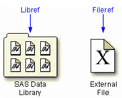General form, FILENAME statement:
FILENAME fileref 'filename';
where
- fileref is a name that you associate with an external file. The name must be 1 to 8 characters long, begin with a letter or underscore, and contain only letters, numbers, or underscores.
- filename is the fully qualified name or location of the file.
Defining a Fully Qualified Filename
The following FILENAME statement temporarily associates the fileref Tests with the external file that contains the data from the exercise stress tests. The complete filename is specified as C:\Users\Tmill.dat in the Windows environment.
filename tests 'c:\users\tmill.dat';
Defining an Aggregate Storage Location
You can also use a FILENAME statement to associate a fileref with an aggregate storage location, such as a directory that contains multiple external files.
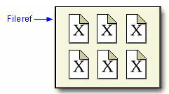This FILENAME statement temporarily associates the fileref Finance with the aggregate storage directory C:\Users\Personal\Finances:
filename finance 'c:\users\personal\finances';
| Note | Both the LIBNAME and FILENAME statements are global. In other words, they remain in effect until you change them, cancel them, or end your SAS session. |
|---|
Referencing a Fully Qualified Filename
When you associate a fileref with an individual external file, you specify the fileref in subsequent SAS statements and commands.
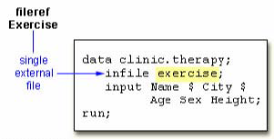Referencing a File in an Aggregate Storage Location
To reference an external file with a fileref that points to an aggregate storage location, you specify the fileref followed by the individual filename in parentheses:
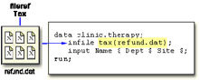| Note | In the Windows operating environment, you can omit the filename extension
but you will need to add quotation marks when referencing the external file, as
in
infile tax('refund');
For details about referencing external files stored in aggregate storage
locations, see the SAS documentation for your operating environment.
|
|---|
Writing a DATA Step Program
Naming the Data Set
The DATA statement indicates the beginning of the DATA step and names the SAS data set to be created.
| To Do This | Use This SAS Statement | Example |
|---|---|---|
| Reference a SAS data library | LIBNAME statement | libname libref 'SAS-datalibrary'; |
| Reference an external file | FILENAME statement | filename tests 'c:\users\tmill.dat'; |
| Name a SAS data set | DATA statement | data clinic.stress; |
General form, basic DATA statement:
DATA SAS-data-set-1 <...SAS-data-set-n>;
where SAS-data-set names (in the format libref.filename) the data set or data sets to be created.
In the following example, the two-level name Clinic.Admit specifies that the file Admit is stored in the permanent SAS library to which the libref Clinic has been assigned.
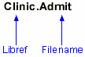Specifying the Raw Data File
When reading raw data, use the INFILE statement to indicate which file the data is in.
| To Do This | Use This SAS Statement | Example |
|---|---|---|
| Reference a SAS data library | LIBNAME statement | libname libref 'SAS-datalibrary'; |
| Reference an external file | FILENAME statement | filename tests 'c:\users\tmill.dat'; |
| Name a SAS data set | DATA statement | data clinic.stress; |
| Identify an external file | INFILE statement | infile tests obs=10; |
General form, INFILE statement:
INFILE file-specification <options>;
where
- file-specification can take the form fileref to name a previously defined file reference or 'filename' to point to the actual name and location of the file.
- options describes the input file's characteristics and specifies how it is to be read with the INFILE statement.
To read the raw data file to which the fileref Tests has been assigned, you write the following INFILE statement:
infile tests;
| Note | Instead of using a FILENAME statement, you can choose to identify the raw
data file by specifying the entire filename and location in the INFILE statement.
For example, the following statement points directly to the
C:\Irs\Personal\Refund.dat file:
infile 'c:\irs\personal\refund.dat'; |
|---|
Column Input
In this chapter, you'll be working with column input, the most common input style. Column input specifies actual column locations for values. However, column input is appropriate only in certain situations. When you use column input, your data must be
- standard character or numeric values.
- in fixed fields.
Standard and Nonstandard Numeric Data
Standard numeric data values can contain only
- numbers.
- decimal points.
- numbers in scientific or E-notation (2.3E4, for example).
- plus or minus signs..
Nonstandard numeric data includes
- values that contain special characters, such as percent signs (%), dollar signs ($), and commas (,).
- date and time values.
- data in fraction, integer binary, real binary, and hexadecimal forms.
The external file that is referenced by the fileref Staff contains the personnel information for a technical writing department of a small computer manufacturer. The fields contain values for each employee's last name, first name, job title, and annual salary.
Notice that the values for Salary contain commas. The values for Salary are considered to be nonstandard numeric values. You cannot use column input to read these values.
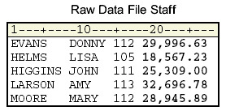Fixed-Field Data
Raw data can be organized in several different ways.
This external file contains data that is in free format, meaning data that is not arranged in columns. Notice that the values for a particular field do not begin and end in the same columns. You cannot use column input to read this file.
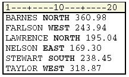This external file contains data that is arranged in columns or fixed fields. You can specify a beginning and ending column for each field. Let's look at how column input can be used to read this data.
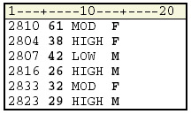Describing the Data
The INPUT statement describes the fields of raw data to be read and placed into the SAS data set.
| To Do This | Use This SAS Statement | Example |
|---|---|---|
| Reference a SAS data library | LIBNAME statement | libname libref 'SAS-datalibrary'; |
| Reference an external file | FILENAME statement | filename tests 'c:\users\tmill.dat'; |
| Name a SAS data set | DATA statement | data clinic.stress; |
| Identify an external file | INFILE statement | infile tests obs=10; |
| Describe data | INPUT statement | input ID 1-4 Age 6-7 ...; |
| Execute the DATA step | RUN statement | run; |
General form, INPUT statement using column input:
INPUT variable ;<$> startcol-endcol ...
where
- variable is the SAS name that you assign to the field.
- the dollar sign ($) identifies the variable type as character (if the variable is numeric, then nothing appears here).
- startcol represents the starting column for this variable.
- endcol represents the ending column for this variable.
Look at the small data file shown below. For each field of raw data that you want to read into your SAS data set, you must specify the following information in the INPUT statement:
- a valid SAS variable name.
- a type (character or numeric).
- a range (starting column and ending column).
The INPUT statement below assigns the character variable ID to the data in columns 1-4, the numeric variable Age to the data in columns 6-7, the character variable ActLevel to the data in columns 9-12, and the character variable Sex to the data in column 14.
filename exer 'c:\users\exer.dat';
data exercise;
infile exer;
input ID $ 1-4 Age 6-7 ActLevel $ 9-12 Sex $ 14;
run;
| SAS Data Set Work.Exercise | ||||
|---|---|---|---|---|
| Obs | ID | Age | ActLevel | Sex |
| 1 | 2810 | 61 | MOD | F |
| 2 | 2804 | 38 | HIGH | F |
| 3 | 2807 | 42 | LOW | M |
| 4 | 2816 | 26 | HIGH | M |
| 5 | 2833 | 32 | MOD | F |
| 6 | 2823 | 29 | HIGH | M |
When you use column input, you can
- read any or all fields from the raw data file.
- read the fields in any order.
- specify only the starting column for values that occupy only one column.
input ActLevel $ 9-12 Sex $ 14 Age 6-7;
| Note | Remember, when you create a new variable, you must specify it in the exact case that you want it stored. An example is NewBalance. Thereafter, you can specify the variable in lowercase. |
|---|
Specifying Variable Names
Each variable has a name that conforms to SAS naming conventions. Variable names
- must be 1 to 32 characters in length.
- must begin with a letter (A-Z) or an underscore (_).
- can continue with any combination of numbers, letters, or underscores.
Let's look at an INPUT statement that uses column input to read the three data fields in the raw data file below.
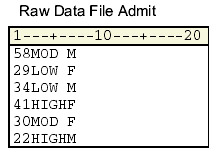The values for the variable that you are naming Age are located in columns 1-2. Because Age is a numeric variable, you do not specify a dollar sign ($) after the variable name.
input Age 1-2
The values for the variable ActLevel are located in columns 3-6. You specify a $ to indicate that ActLevel is a character variable.
input Age 1-2 ActLevel $ 3-6
The values for the character variable Sex are located in column 7. Notice that you specify only a single column.
input Age 1-2 ActLevel $ 3-6 Sex $ 7;
Submitting the DATA Step Program
Verifying the Data
To verify your data, it is a good idea to use the OBS= option in the INFILE statement. Adding OBS=n to the INFILE statement enables you to process only records 1 through n, so you can verify that the correct fields are being read before reading the entire data file.
The program below reads the first 10 records in the raw data file referenced by the fileref Tests. The data is stored in a permanent SAS data set named Clinic.Stress. Don't forget a RUN statement, which tells SAS to execute the previous SAS statements.
data clinic.stress;
infile tests obs=10;
input ID 1-4 Name $ 6-25
RestHR 27-29 MaxHR 31-33
RecHR 35-37 TimeMin 39-40
TimeSec 42-43 Tolerance $ 45;
run;
| SAS Data Set Clinic.Stress | |||||||
|---|---|---|---|---|---|---|---|
| ID | Name | RestHR | MaxHR | RecHR | TimeMin | TimeSec | Tolerance |
| 2458 | Murray, W | 72 | 185 | 128 | 12 | 38 | D |
| 2462 | Almers, C | 68 | 171 | 133 | 10 | 5 | I |
| 2501 | Bonaventure, T | 78 | 177 | 139 | 11 | 13 | I |
| 2523 | Johnson, R | 69 | 162 | 114 | 9 | 42 | S |
| 2539 | LaMance, K | 75 | 168 | 141 | 11 | 46 | D |
| 2544 | Jones, M | 79 | 187 | 136 | 12 | 26 | N |
| 2552 | Reberson, P | 69 | 158 | 139 | 15 | 41 | D |
| 2555 | King, E | 70 | 167 | 122 | 13 | 13 | I |
| 2563 | Pitts, D | 71 | 159 | 116 | 10 | 22 | S |
| 2568 | Eberhardt, S | 72 | 182 | 122 | 16 | 49 | N |
Checking DATA Step Processing
After submitting the previous program, messages in the log verify that the raw data file was read correctly. The notes in the log indicate that
- 10 records were read from the raw data file.
- the SAS data set Clinic.Stress was created with 10 observations and 8 variables.
SAS Log
NOTE: The infile TESTS is:
File Name=C:\My SAS Files\tests.dat,
RECFM=V,LRECL=256
NOTE: 10 records were read from the infile TESTS.
The minimum record length was 80.
The maximum record length was 80.
NOTE: The data set CLINIC.STRESS has 10 observations
and 8 variables.
NOTE: DATA statement used 0.07 seconds
Listing the Data Set
The messages in the log seem to indicate that the DATA step program correctly accessed the raw data file. But it is a good idea to look at the ten observations in the new data set before reading the entire raw data file. You can submit a PROC PRINT step to view the data.
| To Do This | Use This SAS Statement | Example |
|---|---|---|
| Reference a SAS data library | LIBNAME statement | libname libref 'SAS-datalibrary'; |
| Reference an external file | FILENAME statement | filename tests 'c:\users\tmill.dat'; |
| Name a SAS data set | DATA statement | data clinic.stress; |
| Identify an external file | INFILE statement | infile tests obs=10; |
| Describe data | INPUT statement | input ID 1-4 Name $ 6-25 ...; |
| Execute the DATA step | RUN statement | run; |
| List the data | PROC PRINT statement | proc print data=clinic.stress; |
| Execute the final program step | RUN statement | run; |
The following PROC PRINT step lists the Clinic.Stress data set.
proc print data=clinic.stress; run;
The PROC PRINT output indicates that the variables in the Clinic.Stress data set were read correctly for the first 10 records.
| SAS Data Set Clinic.Stress | ||||||||
|---|---|---|---|---|---|---|---|---|
| Obs | ID | Name | RestHR | MaxHR | RecHR | TimeMin | TimeSec | Tolerance |
| 1 | 2458 | Murray, W | 72 | 185 | 128 | 12 | 38 | D |
| 2 | 2462 | Almers, C | 68 | 171 | 133 | 10 | 5 | I |
| 3 | 2501 | Bonaventure, T | 78 | 177 | 139 | 11 | 13 | I |
| 4 | 2523 | Johnson, R | 69 | 162 | 114 | 9 | 42 | S |
| 5 | 2539 | LaMance, K | 75 | 168 | 141 | 11 | 46 | D |
| 6 | 2544 | Jones, M | 79 | 187 | 136 | 12 | 26 | N |
| 7 | 2552 | Reberson, P | 69 | 158 | 139 | 15 | 41 | D |
| 8 | 2555 | King, E | 70 | 167 | 122 | 13 | 13 | I |
| 9 | 2563 | Pitts, D | 71 | 159 | 116 | 10 | 22 | S |
| 10 | 2568 | Eberhardt, S | 72 | 182 | 122 | 16 | 49 | N |
Reading the Entire Raw Data File
Now that you've checked the log and verified your data, you can modify the DATA step to read the entire raw data file. To do so, remove the OBS= option from the INFILE statement and resubmit the program.
data clinic.stress;
infile tests;
input ID 1-4 Name $ 6-25
RestHR 27-29 MaxHR 31-33
RecHR 35-37 TimeMin 39-40
TimeSec 42- 43 Tolerance $ 45;
run;
Invalid Data
When you submit the revised DATA step and check the log, you see a note indicating that invalid data appears for the variable RecHR in line 14 of the raw data file, columns 35-37.
This note is followed by a column ruler and the actual data line that contains the invalid value for RecHR.
NOTE: Invalid data for RecHR in line 14 35-37.
RULE: ----+----1----+----2----+----3----+----4----+----5---
14 2575 Quigley, M 74 152 Q13 11 26 I 45
ID=2575 Name=Quigley, M RestHR=74 MaxHR=152 RecHR=. TimeMin=11
TimeSec=26 Tolerance=I _ERROR_=1
_N_=14
NOTE: 21 records were read from the infile TESTS.
The minimum record length was 80.
The maximum record length was 80.
NOTE: The data set CLINIC.STRESS has 21 observations
and 8 variables.
NOTE: DATA statement used 0.13 seconds
The value Q13 is a data-entry error. It was entered incorrectly for the variable RecHR.
RecHR is a numeric variable, but Q13 is not a valid number. So RecHR is assigned a missing value, as indicated in the log. Because RecHR is numeric, the missing value is represented with a period.
Notice, though, that the DATA step does not fail as a result of the invalid data but continues to execute. Unlike syntax errors, invalid data errors do not cause SAS to stop processing a program.
Assuming you have a way to edit the file and can justify a correction, you can correct the invalid value and re-run the DATA step. If you did this, the log would then show that the data set Clinic.Stress was created with 21 observations, 8 variables, and no messages about invalid data.
NOTE: The infile TESTS2 is:
File Name=C:\My SAS Files\tests2.dat,
RECFM=V,LRECL=256
NOTE: 21 records were read from the infile TESTS2.
The minimum record length was 80.
The maximum record length was 80.
NOTE: The data set CLINIC.STRESS has 21 observations
and 8 variables.
NOTE: DATA statement used 0.14 seconds
After correcting the raw data file, you can list the data again to verify that it is correct.
proc print data=clinic.stress; run;
| SAS Data Set Clinic.Stress | ||||||||
|---|---|---|---|---|---|---|---|---|
| Obs | ID | Name | RestHR | MaxHR | RecHR | TimeMin | TimeSec | Tolerance |
| 1 | 2458 | Murray, W | 72 | 185 | 128 | 12 | 38 | D |
| 2 | 2462 | Almers, C | 68 | 171 | 133 | 10 | 5 | I |
| 3 | 2501 | Bonaventure, T | 78 | 177 | 139 | 11 | 13 | I |
| 4 | 2523 | Johnson, R | 69 | 162 | 114 | 9 | 42 | S |
| 5 | 2539 | LaMance, K | 75 | 168 | 141 | 11 | 46 | D |
| 6 | 2544 | Jones, M | 79 | 187 | 136 | 12 | 26 | N |
| 7 | 2552 | Reberson, P | 69 | 158 | 139 | 15 | 41 | D |
| 8 | 2555 | King, E | 70 | 167 | 122 | 13 | 13 | I |
| 9 | 2563 | Pitts, D | 71 | 159 | 116 | 10 | 22 | S |
| 10 | 2568 | Eberhardt, S | 72 | 182 | 122 | 16 | 49 | N |
| 11 | 2571 | Nunnelly, A | 65 | 181 | 141 | 15 | 2 | I |
| 12 | 2572 | Oberon, M | 74 | 177 | 138 | 12 | 11 | D |
| 13 | 2574 | peterson, V | 80 | 164 | 137 | 14 | 9 | D |
| 14 | 2575 | Quigley, M | 74 | 152 | 113 | 11 | 26 | I |
| 15 | 2578 | Cameron, L | 75 | 158 | 108 | 14 | 27 | I |
Whenever you use the DATA step to read raw data, remember the steps that you followed in this chapter, which help ensure that you don't waste resources when accessing data:
- Write the DATA step using the OBS= option in the INFILE statement.
- Submit the DATA step.
- Check the log for messages.
- View the resulting data set.
- Remove the OBS= option and re-submit the DATA step.
- Check the log again.
- View the resulting data set again.
Creating and Modifying Variables
So far, you've read existing data. But sometimes existing data doesn't provide the information that you need. To modify existing values or to create new variables, you can use an assignment statement in any DATA step.
General form, assignment statement:
variable=expression;
where
- variable names a new or existing variable.
- expression is any valid SAS expression.
| Note | The assignment statement is one of the few SAS statements that doesn't begin with a keyword. |
|---|
For example, here is an assignment statement that assigns the character value Toby Witherspoon to the variable Name:
Name='Toby Witherspoon';
SAS Expressions
You use SAS expressions in assignment statements and many other SAS programming statements to
- transform variables.
- create new variables.
- conditionally process variables.
- calculate new values.
- assign new values.
An expression is a sequence of operands and operators that form a set of instructions. The instructions are performed to produce a new value:
- Operands are variable names or constants. They can be numeric, character, or both.
- Operators are special-character operators, grouping parentheses, or functions. You can learn about functions in the Chapter, Transforming Data with SAS Functions.
Using Operators in SAS Expressions
To perform a calculation, you use arithmetic operators. The table below lists arithmetic operators.
| Operator | Action | Example | Priority |
|---|---|---|---|
| - | negative prefix | negative=-x; | I |
| ** | exponentiation | raise=x**y; | I |
| * | multiplication | mult=x*y; | II |
| / | division | divide=x/y; | II |
| + | addition | sum=x+y; | III |
| - | subtraction | diff=x-y; | III |
When you use more than one arithmetic operator in an expression,
- operations of priority I are performed before operations of priority II, and so on.
- consecutive operations that have the same priority are performed
- from right to left within priority I.
- from left to right within priorities II and III.
- you can use parentheses to control the order of operations.
| Warning | When a value that is used with an arithmetic operator is missing, the result of the expression is missing. The assignment statement assigns a missing value to a variable if the result of the expression is missing. |
|---|
You use the following comparison operators to express a condition.
| Operator | Meaning | Example |
|---|---|---|
| = or eq | equal to | name='Jones, C.' |
| ^= or ne | not equal to | temp ne 212 |
| > or gt | greater than | income>20000 |
| < or lt | less than | partno lt "BG05" |
| >= or ge | greater than or equal to | id>='1543' |
| <= or le | less than or equal to | pulse le 85 |
To link a sequence of expressions into compound expressions, you use logical operators, including the following.
| Operator | Meaning |
|---|---|
| AND or & | and, both. If both expressions are true, then the compound expression is true. |
| OR or | | or, either. If either expression is true, then the compound expression is true. |
More Examples of Assignment Statements
The assignment statement in the DATA step below creates a new variable, TotalTime, by multiplying the values of TimeMin by 60 and then adding the values of TimeSec.
data clinic.stress;
infile tests;
input ID 1-4 Name $ 6-25 RestHr 27-29 MaxHR 31-33
RecHR 35-37 TimeMin 39-40 TimeSec 42-43
Tolerance $ 45;
TotalTime=(timemin*60)+timesec;
run;
| SAS Data Set Clinic.Stress (Partial Listing) | ||||||||
|---|---|---|---|---|---|---|---|---|
| ID | Name | RestHR | MaxHR | RecHR | TimeMin | TimeSec | Tolerance | TotalTime |
| 2458 | Murray, W | 72 | 185 | 128 | 12 | 38 | D | 758 |
| 2462 | Almers, C | 68 | 171 | 133 | 10 | 5 | I | 605 |
| 2501 | Bonaventure, T | 78 | 177 | 139 | 11 | 13 | I | 673 |
| 2523 | Johnson, R | 69 | 162 | 114 | 9 | 42 | S | 582 |
| 2539 | LaMance, K | 75 | 168 | 141 | 11 | 46 | D | 706 |
The expression can also contain the variable name that is on the left side of the equal sign, as the following assignment statement shows. This statement re-defines the values of the variable RestHR as 10 percent higher.
data clinic.stress;
infile tests;
input ID 1-4 Name $ 6-25 RestHr 27-29 MaxHR 31-33
RecHR 35-37 TimeMin 39-40 TimeSec 42-43
Tolerance $ 45;
resthr=resthr+(resthr*.10);
run;
When a variable name appears on both sides of the equal sign, the original value on the right side is used to evaluate the expression. The result is assigned to the variable on the left side of the equal sign.
data clinic.stress;
infile tests;
input ID 1-4 Name $ 6-25 RestHr 27-29 MaxHR 31-33
RecHR 35-37 TimeMin 39-40 TimeSec 42-43
Tolerance $ 45;
resthr=resthr+(resthr*.10);
run; ^ ^
result original value
Date Constants
You can assign date values to variables in assignment statements by using date constants. To represent a constant in SAS date form, specify the date as 'ddmmmyy' or 'ddmmmyyyy', followed by a D.
General form, date constant:
'ddmmm<yy>yy' D
or
"ddmmm<yy>yy" D
where
- dd is a one- or two-digit value for the day.
- mmm is a three-letter abbreviation for the month (JAN, FEB, and so on).
- yy or yyyy is a two- or four-digit value for the year, respectively.
| Note | Be sure to enclose the date in quotation marks. |
|---|
Example
In the following program, the second assignment statement assigns a date value to the variable TestDate.
data clinic.stress;
infile tests;
input ID 1-4 Name $ 6-25 RestHr 27-29 MaxHR 31-33
RecHR 35-37 TimeMin 39-40 TimeSec 42-43
Tolerance $ 45;
TotalTime=(timemin*60)+timesec;
TestDate='01jan2000'd;
run;
| Note | You can also use SAS time constants and SAS datetime constants in
assignment statements.
Time='9:25't;
DateTime='18jan2005:9:27:05'dt;
|
|---|
Subsetting Data
As you read your data, you can subset it by processing only those observations that meet a specified condition. To do this, you can use a subsetting IF statement in any DATA step.
The subsetting IF statement causes the DATA step to continue processing only those raw data records or observations that meet the condition of the expression specified in the IF statement. The resulting SAS data set or data sets contain a subset of the original external file or SAS data set.
General form, subsetting IF statement:
IF expression;
where expression is any valid SAS expression.
- If the expression is true, the DATA step continues to process that record or observation.
- If the expression is false, no further statements are processed for that record or observation, and control returns to the top of the DATA step.
For example, the subsetting IF statement below selects only observations whose values for Tolerance are D. The IF statement is positioned in the DATA step so that other statements do not need to process unwanted observations.
data clinic.stress;
infile tests;
input ID 1-4 Name $ 6-25 RestHr 27-29 MaxHR 31-33
RecHR 35-37 TimeMin 39-40 TimeSec 42-43
Tolerance $ 45;
if tolerance='D';
TotalTime=(timemin*60)+timesec;
run;
Because Tolerance is a character variable, the value D must be enclosed in quotation marks, and it must be the same case as in the data set.
| Note | See the SAS documentation for your operating environment for a comparison of the WHERE and subsetting IF statements when they are used in the DATA step. |
|---|
Reading Instream Data
Throughout this chapter, our program has contained an INFILE statement that identifies an external file to read.
data clinic.stress;
infile tests;
input ID 1-4 Name $ 6-25 RestHr 27-29 MaxHR 31-33
RecHR 35-37 TimeMin 39-40 TimeSec 42-43
Tolerance $ 45;
if tolerance='D';
TotalTime=(timemin*60)+timesec;
run;
However, you can also read instream data lines that you enter directly in your SAS program, rather than data that is stored in an external file. Reading instream data is extremely helpful if you want to create data and test your programming statements on a few observations that you can specify according to your needs.
To read instream data, you use
- a DATALINES statement as the last statement in the DATA step (except for the RUN statement) and immediately preceding the data lines.
- a null statement (a single semicolon) to indicate the end of the input data.
data clinic.stress;
input ID 1-4 Name $ 6-25 RestHr 27-29 MaxHR 31-33
RecHR 35-37 TimeMin 39-40 TimeSec 42-43
Tolerance $ 45;
datalines;
.
.
.
data lines go here
.
.
.
;
General form, DATALINES statement:
DATALINES;
| Note | You can use only one DATALINES statement in a DATA step. Use separate DATA steps to enter multiple sets of data. |
|---|
| Note | You can also use CARDS; as the last statement in a DATA step (except for the RUN statement) and immediately preceding the data lines. The CARDS statement is an alias for the DATALINES statement. |
|---|
| Note | If your data contains semicolons, use the DATALINES4 statement plus a null statement that consists of four semicolons (;;;;) to indicate the end of the input data. |
|---|
Example
To read the data for the treadmill stress tests as instream data, you can submit the following program:
data clinic.stress;
input ID 1-4 Name $ 6-25 RestHr 27-29 MaxHR 31-33
RecHR 35-37 TimeMin 39-40 TimeSec 42-43
Tolerance $ 45;
if tolerance='D';
TotalTime=(timemin*60)+timesec;
datalines;
2458 Murray, W 72 185 128 12 38 D
2462 Almers, C 68 171 133 10 5 I
2501 Bonaventure, T 78 177 139 11 13 I
2523 Johnson, R 69 162 114 9 42 S
2539 LaMance, K 75 168 141 11 46 D
2544 Jones, M 79 187 136 12 26 N
2552 Reberson, P 69 158 139 15 41 D
2555 King, E 70 167 122 13 13 I
2563 Pitts, D 71 159 116 10 22 S
2568 Eberhardt, S 72 182 122 16 49 N
2571 Nunnelly, A 65 181 141 15 2 I
2572 Oberon, M 74 177 138 12 11 D
2574 Peterson, V 80 164 137 14 9 D
2575 Quigley, M 74 152 113 11 26 I
2578 Cameron, L 75 158 108 14 27 I
2579 Underwood, K 72 165 127 13 19 S
2584 Takahashi, Y 76 163 135 16 7 D
2586 Derber, B 68 176 119 17 35 N
2588 Ivan, H 70 182 126 15 41 N
2589 Wilcox, E 78 189 138 14 57 I
2595 Warren, C 77 170 136 12 10 S
;
| Warning | Notice that you do not need a RUN statement following the null statement (the semicolon after the data lines). The null statement functions as a step boundary when the DATALINES statement is used, so the DATA step is executed as soon as SAS encounters it. If you do place a RUN statement after the null statement, any statements between the null statement and the RUN statement are not executed as part of the DATA step. |
|---|
Steps to Create a Raw Data File
Look at the SAS program and SAS data set created earlier in this chapter.
data clinic.stress;
infile tests;
input ID 1-4 Name $ 6-25 RestHR 27-29 MaxHR 31-33
RecHR 35-37 TimeMin 39-40 TimeSec 42-43
Tolerance $ 45;
if tolerance='D';
TotalTime=(timemin*60)+timesec;
run;
| SAS Data Set Clinic.Stress | ||||||||
|---|---|---|---|---|---|---|---|---|
| ID | Name | RestHR | MaxHR | RecHR | TimeMin | TimeSec | Tolerance | TotalTime |
| 2458 | Murray, W | 72 | 185 | 128 | 12 | 38 | D | 758 |
| 2539 | LaMance, K | 75 | 168 | 141 | 11 | 46 | D | 706 |
| 2552 | Reberson, P | 69 | 158 | 139 | 15 | 41 | D | 941 |
| 2572 | Oberon, M | 74 | 177 | 138 | 12 | 11 | D | 731 |
| 2574 | peterson, V | 80 | 164 | 137 | 14 | 9 | D | 849 |
| 2584 | Takahashi, Y | 76 | 163 | 135 | 16 | 7 | D | 967 |
As you can see, the data set has been modified with SAS statements. If you wanted to write the new observations to a raw data file, you could reverse the process that you’ve been following and write out the observations from a SAS data set as records or lines to a new raw data file.
Using the_NULL_ Keyword
Because the goal of your SAS program is to create a raw data file and not a SAS data set, it is inefficient to list a data set name in the DATA statement. Instead, use the keyword _NULL_, which enables you to use the DATA step without actually creating a SAS data set. A SET statement specifies the SAS data set that you want to read from.
data _null_;
set clinic.stress;
The next step is to specify the output file.
Specifying the Raw Data File
You use the FILE and PUT statements to write the observations from a SAS data set to a raw data file, just as you used the INFILE and INPUT statements to create a SAS data set. These two sets of statements work almost identically.
When writing observations to a raw data file, use the FILE statement to specify the output file.
General form, FILE statement:
FILE file-specification;
where file-specification can take the form fileref to name a previously defined file reference or 'filename' to point to the actual name and location of the file.
For example, if you want to read the Clinic.Stress data set to a raw data file that is referenced by the fileref Newdat, you would begin your program with the following SAS statements.
data _null_;
set clinic.stress;
file newdat;
Instead of identifying the raw data file with a SAS fileref, you can choose to specify the entire filename and location in the FILE statement. For example, the following FILE statement points directly to the C:\Clinic\Patients\Stress.dat file. Note that the path specifying the filename and location must be enclosed in quotation marks.
data _null_;
set clinic.stress;
file 'c:\clinic\patients\stress.dat';
Describing the Data
Whereas the FILE statement specifies the output file, the PUT statement describes the lines to write to the raw data file.
General form, PUT statement using column output:
PUT variable startcol-endcol . . .;
where
- variable is the name of the variable whose value is written.
- startcol indicates where in the line to begin writing the value.
- endcol indicates where in the line to end the value.
In general, the PUT statement mirrors the capabilities of the INPUT statement. In this case you are working with column output. Therefore, you need to specify the variable name, starting column, and ending column for each field that you want to create. Because you are creating raw data, you don't need to follow character variable names with a dollar sign ($).
data _null_;
set clinic.stress;
file 'c:\clinic\patients\stress.dat';
put id 1-4 name 6-25 resthr 27-29 maxhr 31-33
rechr 35-37 timemin 39-40 timesec 42-43
tolerance 45 totaltime 47-49;
run;
| SAS Data Set Clinic.Stress | ||||||||
|---|---|---|---|---|---|---|---|---|
| ID | Name | RestHR | MaxHR | RecHR | TimeMin | TimeSec | Tolerance | TotalTime |
| 2458 | Murray, W | 72 | 185 | 128 | 12 | 38 | D | 758 |
| 2539 | LaMance, K | 75 | 168 | 141 | 11 | 46 | D | 706 |
| 2552 | Reberson, P | 69 | 158 | 139 | 15 | 41 | D | 941 |
| 2572 | Oberon, M | 74 | 177 | 138 | 12 | 11 | D | 731 |
| 2574 | peterson, V | 80 | 164 | 137 | 14 | 9 | D | 849 |
| 2584 | Takahashi, Y | 76 | 163 | 135 | 16 | 7 | D | 967 |
The resulting raw data file would look like this:
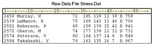In later chapters you'll learn how to use INPUT and PUT statements to read and write raw data in other forms and record types.
| Note | If you do not execute a FILE statement before a PUT statement in the current iteration of the DATA step, then SAS writes the lines to the SAS log. If you specify the PRINT option in the FILE statement, before the PUT statement, then SAS writes the lines to the procedure output file. |
|---|
Additional Features
In this chapter, you learned to read raw data by writing an INPUT statement that uses column input. You also learned how to write to a raw data file by using the FILE statement with column input. However, column input is appropriate only in certain situations. When you use column input, your data must be
- standard character and numeric values. If the raw data file contains nonstandard values, then you need to use formatted input, another style of input. To learn about formatted input, see Chapter, Reading Raw Data in Fixed Fields.
- in fixed fields. That is, values for a particular variable must be in the same location in all records. If your raw data file contains values that are not in fixed fields, then you need to use list input. To learn about list input, see Chapter, Reading Free-Format Data.
Other forms of the INPUT statement enable you to read
- nonstandard data values such as hexadecimal, packed decimal, SAS date values, and monetary values that contain dollar signs and commas.
- free-format data (data that is not in fixed fields).
- implied decimal points.
- variable-length data values.
- variable-length records.
- different record types.
Summary
Text Summary
Raw Data Files
A raw data file is an external file whose records contain data values that are organized in fields. The raw data files in this chapter contain fixed fields.
Steps to Create a SAS Data Set
You need to follow several steps to create a SAS data set using raw data.
- Reference the raw data file to be read.
- Name the SAS data set.
- Identify the location of the raw data.
- Describe the data values to be read.
Referencing a SAS Library
To begin your program, you might need to use a LIBNAME statement to reference the SAS library in which your data set will be stored.
Referencing a Raw Data File
Before you can read your raw data, you must reference the raw data file by creating a fileref. Just as you assign a libref by using a LIBNAME statement, you assign a fileref by using a FILENAME statement.
Writing a DATA Step Program
The DATA statement indicates the beginning of the DATA step and names the SAS data set(s) to be created.
Next, you specify the raw data file by using the INFILE statement. The OBS= option in the INFILE statement enables you to process a specified number of observations.
This chapter teaches column input, the most common input style. Column input specifies actual column locations for data values. The INPUT statement describes the raw data to be read and placed into the SAS data set.
Submitting the DATA Step Program
When you submit the program, you can use the OBS= option with the INFILE statement to verify that the correct data is being read before reading the entire data file.
After you submit the program, view the log to check the DATA step processing. You can then list the data set by using the PROC PRINT procedure.
After you've checked the log and verified your data, you can modify the DATA step to read the entire raw data file by removing the OBS= option from the INFILE statement.
If you are working with a raw data file that contains invalid data, the DATA step continues to execute. Unlike syntax errors, invalid data errors do not cause SAS to stop processing a program. If you have a way to edit the invalid data, it's best to correct the problem and re-run the DATA step.
Creating and Modifying Variables
To modify existing values or to create new variables, you can use an assignment statement in any DATA step. Within assignment statements, you can specify any SAS expression.
You can use date constants to assign dates in assignment statements. You can also use SAS time constants and SAS datetime constants in assignment statements.
Subsetting Data
To process only observations that meet a specified condition, use a subsetting IF statement in the DATA step.
Reading Instream Data
To read instream data lines instead of an external file, use a DATALINES statement or a CARDS statement and enter data directly in your SAS program. Omit the RUN statement at the end of the DATA step.
Creating a Raw Data File
When the goal of your SAS program is to create a raw data file and not a SAS data set, it is inefficient to list a data set name in the DATA statement. Instead use the keyword _NULL_, which allows the power of the DATA step without actually creating a SAS data set. A SET statement specifies the SAS data set that you want to read from.
You can use the FILE and PUT statements to write out the observations from a SAS data set to a raw data file the same way you used the INFILE and INPUT statements to create a SAS data set. These two sets of statements work almost identically.
Points to Remember
- LIBNAME and FILENAME statements are global. Librefs and filerefs remain in effect until you change them, cancel them, or end your SAS session.
- For each field of raw data that you read into your SAS data set, you must specify the following in the INPUT statement: a valid SAS variable name, a type (character or numeric), a starting column, and if necessary, an ending column.
- When you use column input, you can read any or all fields from the raw data file, read the fields in any order, and specify only the starting column for variables whose values occupy only one column.
- Column input is appropriate only in some situations. When you use column input, your data must be standard character and numeric values, and these values must be in fixed fields. That is, values for a particular variable must be in the same location in all records.